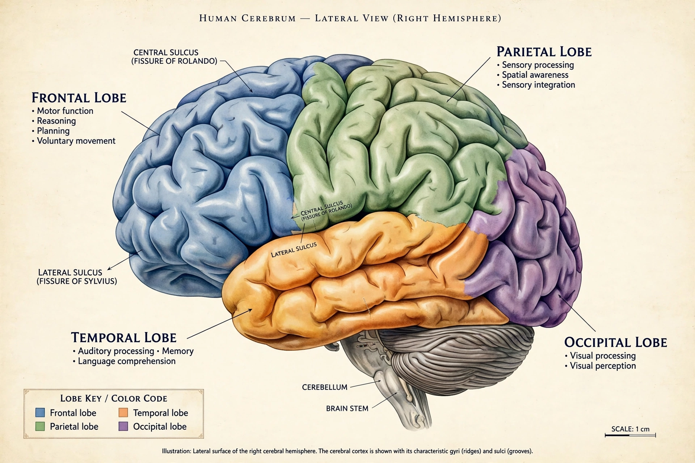

The cerebrum is the largest part of the brain in vertebrates. In mammals it consists of two cerebral hemispheres separated by the longitudinal fissure and joined by the corpus callosum, covered by the cerebral cortex.

| Part of | Brain |
|---|---|
| Components | Cerebral cortex, white matter, basal ganglia |
Each hemisphere is divided into frontal, parietal, temporal and occipital lobes. The outer grey matter of the cortex — folded into gyri and sulci in humans — handles higher functions, while inner white matter carries myelinated axons. Deep structures include the hippocampus, amygdala and basal ganglia, involved in memory, emotion and movement.
The cerebrum underlies sensation, voluntary movement, language, reasoning, memory and consciousness. Functions are partly lateralised, with language usually dominant in the left hemisphere.